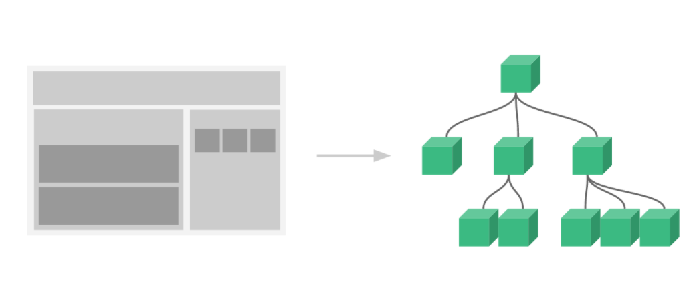

1. v-if: 이제 나를 볼수 있어요(조건문 : true & false )
* 콘솔에서, app4.todos.push({ text: 'New item' })을 입력하십시오. Todo 목록에 새 항목이 동적으로 추가 된것을 볼 수 있습니다.
{{ message }}
- split() 나누고 : [ "안", "녕", "!", " ", "V", "u", "e", ".", "j", "s", "!" ]
- reverse() 뒤집고: [ "!", "s", "j", ".", "e", "u", "V", " ", "!", "녕", "안" ]
- join() 합치기! : !sj.euV !녕안
{{message}}
모든 유형의 애플리케이션 인터페이스를 컴포넌트 트리로 추상화 할수있습니다.
* v-for : 배열데이터 바인딩 /v-bind:todo(객체), v-bind:key(키) 필요
end
next